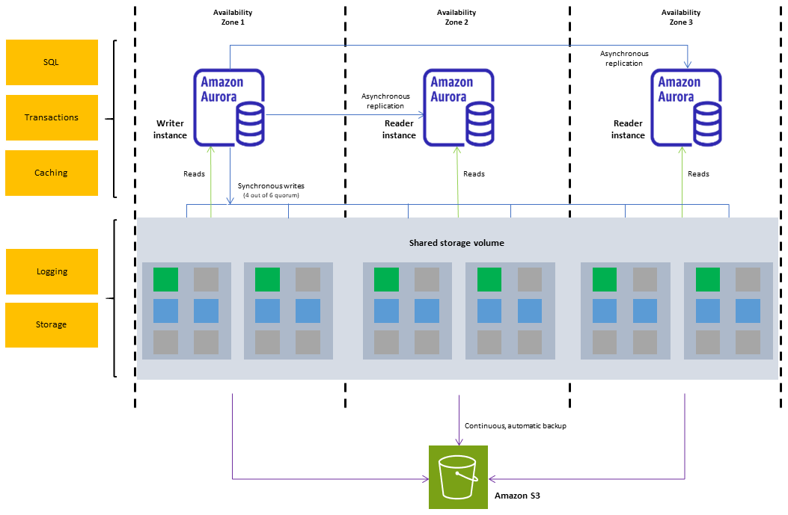
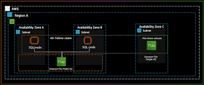
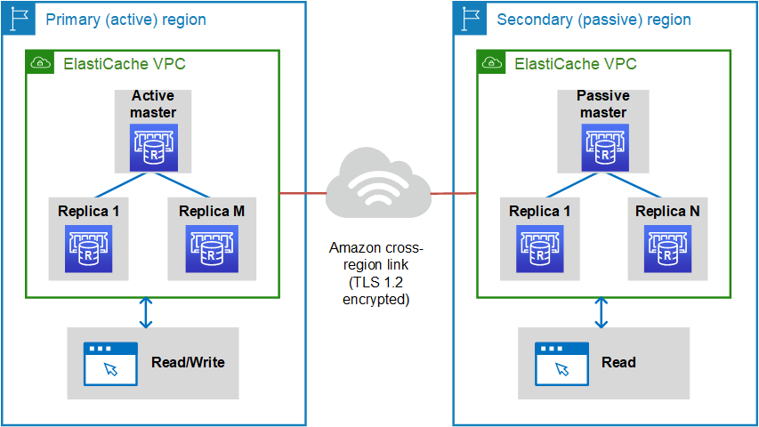

Um cluster de banco de dados é um conjunto de servidores (ou instâncias) que trabalham juntos para armazenar e gerenciar dados.
Distribuindo a carga de trabalho entre esses servidores, ele oferece muito mais segurança doque um servidor isolado, porque se alguma instancia falhar, o sistema não necessariamente ficara comprometido, pois ainda ha outras instancias operantes, fora que aumenta o desempenho e permite a integração e adição de mais recursos.
Relação com a AWS...
O Amazon Aurora (Aurora) é um mecanismo de banco de dados relacional gerenciado compatível com o MySQL e o PostgreSQL. Colocando em outras palavras, o Amazon Aurora é um serviço da AWS que facilita a configuração, operação e escala de um banco de dados relacional na nuvem.
Failover
Pincelando alguns conceitos importantes dentro de um Cluster, vamos começar pelo failover, que, resumidamente, é o processo de troca automática para uma instância secundária quando a principal falha. Esses Clusters podem usar maquina fisicas, maquinas virtuais ou uma cobinação das duas, mas o importanten é que seja algo que possa servir como uma instancia secundaria. O Principal beneficio garantido por um failover é a alta disponibilidade (porque o tempo de inatividade é reduzido).
Replicação
A replicação de dados dentro de um cluster é (como o nome sugere) replicar os dados de um cluster, aumentando a redundancia e, assim como o failover, aumentar a tolerancia de um servdidor caso haja uma falha. A Replicação pode ocorrer de duas maneiras: Síncrona: a cópia é feita em tempo real (mais segura, mas pode ser mais lenta). Assíncrona: a cópia é feita com atraso, mas tem menos impacto no desempenho.
Escalabilidade
A escalabilidade é a capacidade de aumentar os recursos do banco de dados conforme a demanda, aumentando ou o poder de uma maquina, ou adicionando mais servidores e outras instancias. São diversos os beneficios da aplicação desse conceito, mas em geral, isso aumenta em muito a capacidade do banco de dados como um todo, melhorando o processamento de informações e aumentando o espaço de armazenamento de dados.